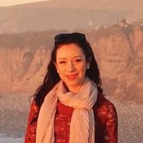
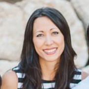
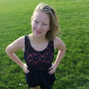
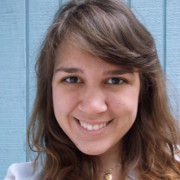

Team
Melanee Grondahl
Founder Feather Coffee Melanee was diagnosed with a rare lung disease called Lymphangioleiomyomatosis or LAM in April 2013. She transformed her diagnosis into a warrant for a new life and decided to use her creativity, business acumen, and passion for the rare disease community to start Feather Coffee. A former English instructor and digital content designer, she is now a rare disease advocate who is determined to give hope to the rare disease community one sip at a time. Read more of Melanee's Story.
Melanee was diagnosed with a rare lung disease called Lymphangioleiomyomatosis or LAM in April 2013. She transformed her diagnosis into a warrant for a new life and decided to use her creativity, business acumen, and passion for the rare disease community to start Feather Coffee. A former English instructor and digital content designer, she is now a rare disease advocate who is determined to give hope to the rare disease community one sip at a time. Read more of Melanee's Story.
Jon Joiner
Filmmaker If Jon Joiner isn't riding a bicycle, DIY-ing crafty goods, road-tripping in his Vanagon, or taking a GoPro-strapped drone to unexplored heights, he's likely making films. Actually, he's often found wielding a camera while riding his bike, crafting stuff, and road-tripping, too. His wide range of interests have unintentionally made him one of the world's greatest multitaskers. Over the past seven years, people have asked Jon to turn his camera in the direction of their weddings, concerts, and conferences. He's personable enough that people have also asked him to collaborate on documentaries and short films. He and his wife are both cat people, but don't let that stop you from reaching out.
If Jon Joiner isn't riding a bicycle, DIY-ing crafty goods, road-tripping in his Vanagon, or taking a GoPro-strapped drone to unexplored heights, he's likely making films. Actually, he's often found wielding a camera while riding his bike, crafting stuff, and road-tripping, too. His wide range of interests have unintentionally made him one of the world's greatest multitaskers. Over the past seven years, people have asked Jon to turn his camera in the direction of their weddings, concerts, and conferences. He's personable enough that people have also asked him to collaborate on documentaries and short films. He and his wife are both cat people, but don't let that stop you from reaching out.
Dane Johnson
Filmmaker Dane Johnson is a writer, lyricist, and lover of people. His objective is to tell meaningful stories that dispel ignorance and endorse hope.
Dane Johnson is a writer, lyricist, and lover of people. His objective is to tell meaningful stories that dispel ignorance and endorse hope.
Crystal Villegas
Visual DesignerCrystal is a Bay Area-based visual designer with a passion for chocolate, oops, she meant cause-marketing.
Wilson Barrios
Graphic DesignerWilson Barrios is a graphic designer and the owner of WireB graphics in Santa Clara, California.
Stephanie Kartalopoulos
Communication Consultant Feather Coffee's Communication Consultant, Stephanie Kartalopoulos is a college professor, freelance writer, poet, yogi, and runner living in Savannah, GA. She is brought to life by creating community wherever she goes and loves--more than anything else--to gather her friends together for potluck dinners and talk about anything and everything late into the night. She is excited to join the Feather Coffee team because of her belief that helping the world around her should be fun, collaborative, and incredibly yummy.
Feather Coffee's Communication Consultant, Stephanie Kartalopoulos is a college professor, freelance writer, poet, yogi, and runner living in Savannah, GA. She is brought to life by creating community wherever she goes and loves--more than anything else--to gather her friends together for potluck dinners and talk about anything and everything late into the night. She is excited to join the Feather Coffee team because of her belief that helping the world around her should be fun, collaborative, and incredibly yummy.
Michelle Rai
Marketing Communications ConsultantMichelle Rai is a Marketing Communications Consultant for Feather Coffee and spends most days teaching college students the ins and outs of public relations, communication and social media. She has what some might consider an unhealthy relationship with the game of tennis, her iPhone and chocolate chip cookies. Michelle credits her husband and two kids in keeping her juggling abilities in check.
Maddy Miller
Fundraising SupportMaddy is a senior Health Communication major at Pacific Union College. After graduating in June, she plans on teaching English abroad. She loves non-profit work, and wants to either start or manage her own. Learning from professors and creators at PUC has inspired her love of filmmaking, drawing, reading, and outdoors. She's only recently started drinking coffee, so cannot contribute as a critic on that side of Feather Coffee's business.
Jessica Winters
Fundraising SupportJessica Winters is a student at Pacific Union College, studying journalism and public relations. She has a passion for writing, cooking, health, and working with coffee as a barista. She is excited to be working with Feather Coffee, and believes that it can do great things for a lot of people.
Sierra Wisehart
Fundraising SupportSierra Wisehart is a student at Pacific Union College pursing a B.A. of history with an emphasis in political studies. Besides an eagerness to learn, Sierra loves to read mystery novels and explore the outdoors. She is very excited to help out with Feather Coffee.